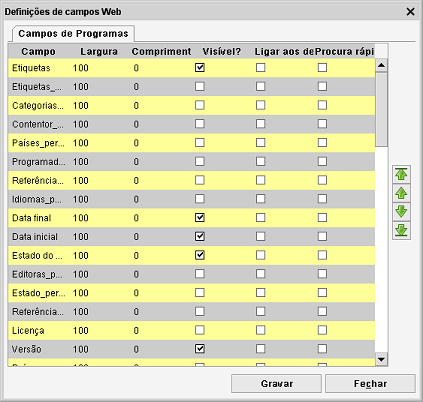

Definições de campos Web
Caminho de menu: Definições > Definições > Definições de campos Web
Aqui pode definir que campos quer mostrar e em que ordem, nos separadores de resumo do item.

Campo
O nome do campo ao qual as definições pertencem ou serão aplicadas.
Largura
A largura do campo nos separadores de resumo do item.
Comprimento máximo do texto
Por predefinição não é cortado, o que pode levar a excessos nas páginas de resumo. Definir um valor
aqui limita o tamanho do texto mostrado.
Visível
Quer mostrar este campo no resumo?
Ligar aos detalhes
Se marcada, o campo torna-se uma ligação clicável. A ligação abre o separador Detalhes.
Procura rápida
Marcar um campo como Procura rápida adiciona o campo à área de procura. A área de procura é mostrada
no canto inferior esquerdo do ambiente Web.